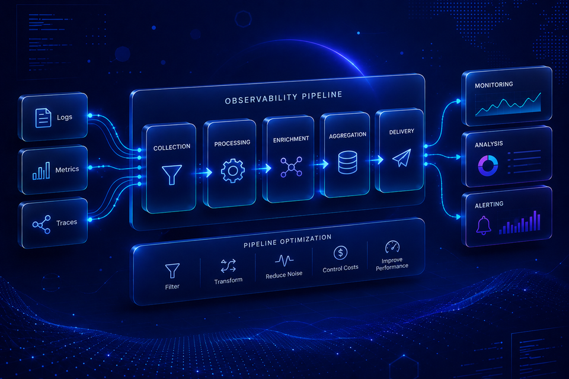

Evaluating Machine Learning Algorithms and Identifying Successful Companies
Built a sentiment analysis system using NLP and machine learning to classify Amazon video game reviews into positive, neutral, and negative sentiments. Applied TF-IDF vectorization, text preprocessing, and classification models including kNN and SVM to uncover customer behaviour patterns and identify high-performing gaming companies.
Intelligent Restaurant Review Analysis

An intelligent system that automatically analyzes restaurant reviews using machine learning to provide real-time sentiment insights, helping restaurant owners make data-driven decisions.
Implemented a machine learning solution for early dementia detection by analyzing patient medical data. The project combines different prediction algorithms to provide insights that can help healthcare providers make better informed decisions about patient care.
Developed a credit card fraud detection system using machine learning algorithms to identify suspicious transactions in a German credit card dataset. This project aimed to improve financial security by comparing the effectiveness of both models in detecting fraudulent activity.
A machine learning project focusing on recognizing human activities through smartphone and smartwatch sensor data. The project combined data visualization techniques with machine learning to accurately classify various physical activities such as walking, jogging, and eating.
Healthcare Data Engineering & Patient Management Platform

Designed and implemented a cloud-native ETL pipeline using Python,
Terraform, and modern data engineering practices.
The project focused on scalable data ingestion,
automated transformations, infrastructure provisioning,
and workflow automation.
Apache Log ETL & Observability Pipeline

Built an Apache log ETL pipeline for automated ingestion,
classification, monitoring, and observability across enterprise systems.
Improved reporting reliability and reduced manual log processing workflows.
Real Estate Data Engineering Platform
Developed an automated ETL pipeline using Python,
PostgreSQL, and Power BI to centralise fragmented property datasets
and support scalable real-time reporting workflows.
AWS Infrastructure as Code & Cloud Data Pipeline

Designed and deployed a cloud-native ETL pipeline using Terraform,
AWS S3, PostgreSQL RDS, Python, and Pandas to modernise sales reporting workflows
for an e-commerce environment. Automated infrastructure provisioning,
data ingestion, transformation, cloud storage, and SQL validation while applying
Infrastructure as Code (IaC) and production-style engineering practices.
Student Data Engineering & Analytics Platform
Built a scalable student analytics platform that automated ingestion,
cleaning, transformation, and version control of datasets collected from
over 150 schools. Developed centralized reporting workflows to support
student performance monitoring, attendance tracking, and institutional insights.